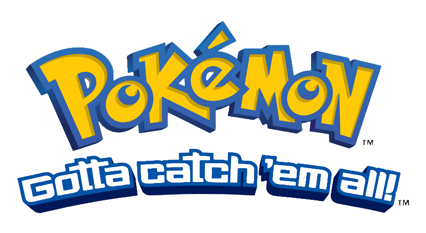
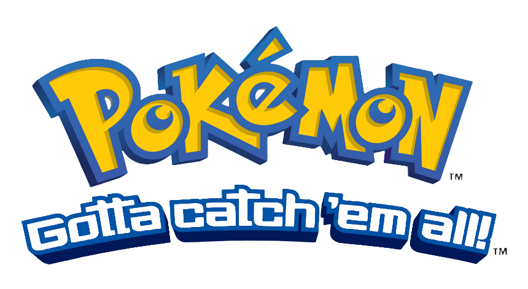

-
Bulbasaur #001

- Planta
- Veneno
Há uma semente de planta em suas costas desde o dia que este Pókemon nasce. A semente cresce lentamente.
-
Ivysaur #002

- Planta
- Veneno
Quando o bulbo em suas costas cresce, parece perder a capacidade de ficar de pé em suas patas traseiras.
-
Venusaur #003

- Planta
- Veneno
Sua planta floresce quando está absorvendo energia solar. Ele permanece em movimento para buscar a luz solar.
-
Charmander #004

- Fogo
Tem preferência por coisas quentes. Quando chove, diz-se que o vapor jorra da ponta de sua cauda.
-
Charmeleon #005

- Fogo
Tem uma natureza bárbara. Na batalha, ele chicoteia sua cauda ardente e corta com garras afiadas.
-
Charrizard #006

- Fogo
Ele cospe fogo que é quente o suficiente para derreter pedregulhos. Pode causar incêndios florestais soprando chamas.
-
Squirtle #007

- Água
Quando ele retrai seu longo pescoço em sua concha, ele esguicha água com força vigorosa.
-
Wartortle #008

- Água
É reconhecido como um símbolo de longevidade. Se sua concha tem algas, esse Wartortle é muito antigo.
-
Blastoise #009

- Água
Ele esmaga seu inimigo sob seu corpo pesado para causar desmaios. Em uma pitada, ele se retirará dentro de sua concha.
-
Vulpix #010

- Fogo
Enquanto jovem, tem seis lindas caudas. Quando cresce, várias novas caudas nascem.
-
Ninetails #011

- Fogo
Dizem que vive 1.000 anos e cada uma de suas caudas é carregada de poderes sobrenaturais.
-
Cubone #012

- Terra
Quando a memória de sua falecida mãe o leva às lágrimas, seus gritos ecoam tristemente dentro do crânio que ele usa em sua cabeça.
-
Totodile #013

- Água
Apesar da pequenez de seu corpo, as mandíbulas do Totodile são muito poderosas. Embora o Pokémon possa pensar que está apenas beliscando de brincadeira, sua mordida tem poder suficiente para causar ferimentos graves.
-
Togepi #014

- Fada
A concha parece estar cheia de alegria. Diz que se compartilhar boa sorte terá quando for tratado com gentileza.
-
Snorlax #015

- Normal
Não fica satisfeito a menos que coma mais de 880 libras de comida todos os dias. Quando termina de comer, vai imediatamente dormir.
 
